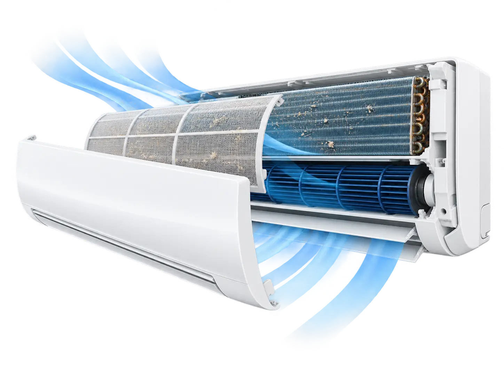
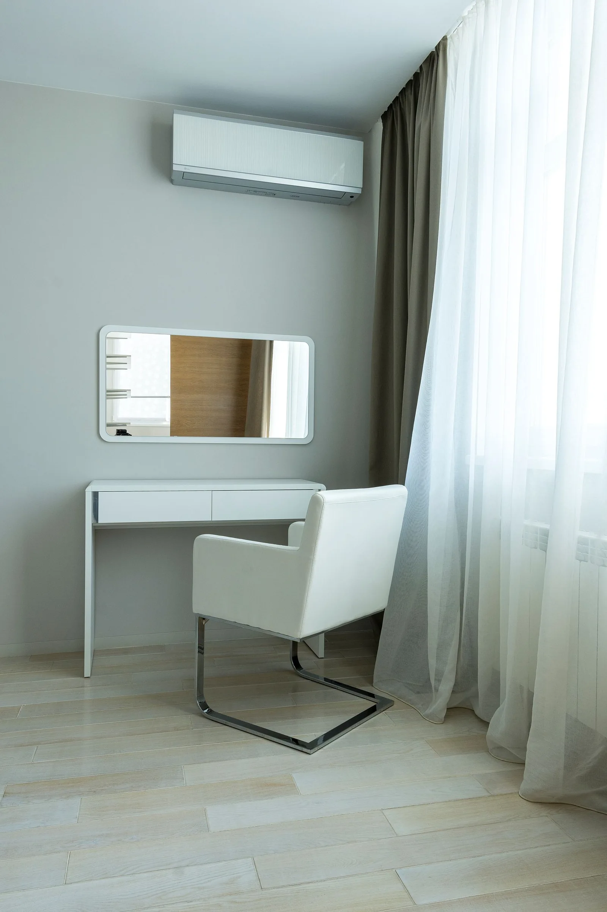
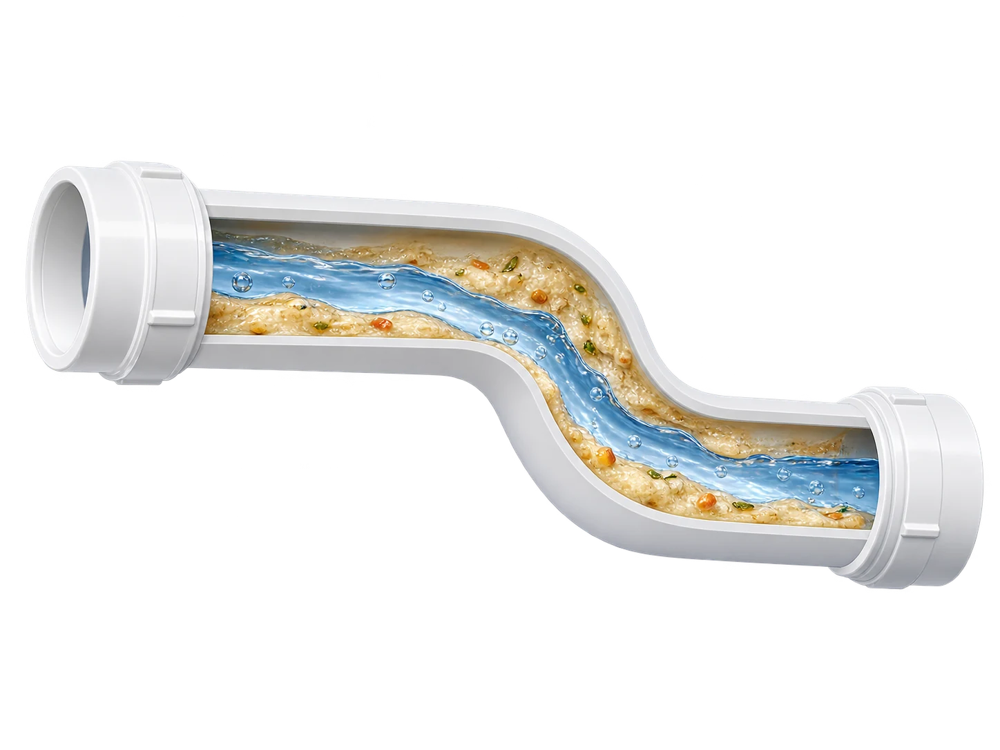
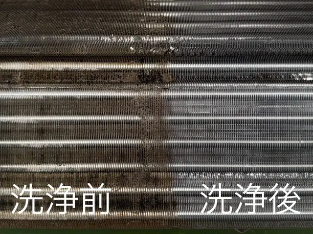
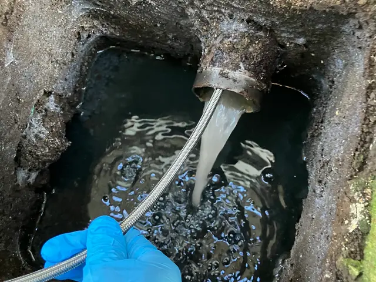
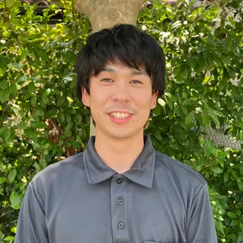

エアコンクリーニング
フィルターを洗っても、
ニオイが気になる。

- ホコリ・油分＋冷房後の湿気
- カビが
増えやすい - 運転時の
ニオイの原因に
部品を取り外し、奥の汚れまで高圧洗浄。
エアコンの洗浄内容・料金080-9053-8017電話受付 8:00〜18:00

茨城・栃木の対象地域へ
エアコンの奥まで、すっきり洗浄。
フィルターの奥の汚れまで、
プロの高圧洗浄で。
筑西市を拠点に、茨城・栃木の対象地域へ伺います。
戸建て住宅の排水管洗浄にも対応02 お悩みから選ぶ
エアコンクリーニング

部品を取り外し、奥の汚れまで高圧洗浄。
エアコンの洗浄内容・料金戸建て住宅の排水管洗浄

出典：LIXIL
屋外の汚水マスから、配管内を高圧洗浄。
室内排水口からの高圧洗浄は別料金です。
排水管の洗浄内容・料金図は汚れが原因の場合のイメージです。症状には別の原因もあり、機種・配管の状態を確認して対応します。
03 実際の洗浄写真

部品と、本体内部を洗浄
04 エアコンクリーニング
養生・部品洗浄・本体内部の高圧洗浄・動作確認まで。
壁掛け・通常タイプ
7,500円／台
1台・税込
お掃除機能付き
15,500円／台
通常料金7,500円＋追加8,000円・税込
| メニュー | 料金（税込） |
|---|---|
| 通常タイプ・2台以上 | 7,000円／台 |
| 消臭抗菌コート | ＋2,500円／台 |
| 室外機洗浄 | ＋3,000円／台 |
複数台割引の適用条件：通常タイプを2台以上ご依頼の場合は、1台あたり7,000円（税込）です。お掃除機能付き等のオプション料金は別途かかります。
| 条件 | 費用・取扱い |
|---|---|
| エレベーターのない集合住宅の4階以上 | ＋2,000円／戸（税込） |
| 家庭用より大きい業務用壁掛け機器 | 家庭用より大きい業務用壁掛け機器は＋5,000円／台（税込）です。機種や設置先によっては対応できない場合があります。 |
| 無料駐車スペースがない場合 | 無料で駐車できる場所がない場合は、有料駐車場の実費をご負担いただきます。 |
| 出張費 | 下記の対応エリアは出張費無料です。対応エリア外についてはご相談ください。 |
室外機が屋根置き・天吊りの場合は、作業できないことがあります。設置状況を事前にお知らせください。
見積もりにかかる費用：電話でのご相談・お見積もりは無料です。現地見積もりは行っていません。
現地で追加作業が必要になった場合：ご相談時に機種や設備の状態を伺います。追加作業が必要な場合は、内容と費用を事前にご説明します。
支払方法・変更やキャンセルの条件は「ご依頼の流れ」でご確認ください。 詳しく見る
機種や設置状況により、総額が変わります。分かる範囲でお知らせください。
状態を確認し、周囲を守って部品を取り外します。
取り外した部品と本体内部を、それぞれ洗います。
組み立て後に動作と仕上がりを確認します。
通常タイプ 約2時間／台お掃除機能付き 約3時間／台機器の状態・設置条件・台数によって前後します。
主な対象は家庭用の壁掛けエアコンです。お掃除機能付きは機種により対応できない場合があります。業務用壁掛け機器は追加料金欄をご確認ください。
右壁との間隔が10cm未満など、設置条件によって分解・作業ができない場合があります。お電話で伺った内容に加え、現地の状態を確認して判断する場合があります。
年式・保証：製造から8年以上のエアコンは保証対象外です。機種や設置状況によっては、作業をお受けできない場合があります。
分解できない場合：機種や壁・天井との間隔によって、分解できる範囲が限られる場合があります。一部分解できない場合も料金の減額はありません。
ニオイが残る場合：臭いが完全に取れない場合があります。臭い残りによる再訪問は行っていません。
材質などの条件：漆喰・砂壁・和紙・木板・エコカラット等の水に弱い壁材では、作業条件や補償対象を事前に確認します。
05 戸建て住宅の排水管洗浄
すでに排水があふれている場合は、現在の状態を事前にお知らせください。作業可否と費用を確認します。

室内水回りの薬剤洗浄、屋外汚水マスからの排水管高圧洗浄、敷地内の汚水マス洗浄、最終確認を行います。
トイレの排水管は屋外マスからのみ作業します。2階部分は立て管まで、屋外は敷地内公共マスの手前までが対象です。浄化槽の洗浄は含みません。
| メニュー・条件 | 料金 |
|---|---|
| 一般住宅 | 16,000円（税込）／棟 |
| 二世帯住宅 | 30,000円（税込）／棟 |
| 室内排水管清掃 | ＋4,000円／箇所（税込） |
| 汚水マス内の根切り | ＋5,000円／箇所（税込） |
| 汚水マスにバスケットがある場合 | ＋3,000円／箇所（税込） |
| 汚水マスが詰まりなどで溢れている場合 | ＋3,000円／箇所（税込） |
室内排水口からの高圧洗浄は、基本作業とは別の追加作業です。部品交換等が必要な場合の費用：排水ホース等の劣化や接続状況によって部品交換が必要な場合は、追加費用を事前にご説明します。
作業時間の目安は1棟約90分、追加作業は1箇所約30分です。内容や状況によって前後します。
鉄配管・鉄製排水口、開けられない老朽マス、地盤沈下によって破損した配管には対応していません。マスの上を覆う荷物などは、作業前に移動をお願いします。洗濯機の移動が必要な場合、洗濯機排水口を作業できないことがあります。
出張・駐車場の費用は「対応地域」でご確認ください。 詳しく見る
06 SERVICE AREA
お住まいの市町村が対象か、こちらからご確認ください。
茨城県IBARAKI
茨城県・筑西市ほか
筑西市、石岡市、小美玉市、笠間市、かすみがうら市、古河市、桜川市、下妻市、常総市、つくば市、つくばみらい市、土浦市、坂東市、水戸市、結城市、稲敷郡阿見町、猿島郡五霞町・境町、東茨城郡茨城町・城里町、結城郡八千代町。
栃木県TOCHIGI
栃木県の対象市町村へ対応
足利市、宇都宮市、小山市、鹿沼市、さくら市、佐野市、下野市、栃木市、那須烏山市、日光市、真岡市、矢板市、河内郡上三川町、塩谷郡塩谷町・高根沢町、下都賀郡野木町・壬生町、那須郡那珂川町、芳賀郡市貝町・芳賀町・益子町・茂木町。
下記の対応エリアは出張費無料です。対応エリア外についてはご相談ください。
無料で駐車できる場所がない場合は、有料駐車場の実費をご負担いただきます。
一覧にない地域については、電話でご相談ください。
07 HOW IT WORKS
市町村・気になる症状をお知らせください。
型番や設置状況、作業範囲を確認します。
総額・作業範囲・条件にご了承後、予約確定。
お支払いは作業後に現金で。
利用できる支払方法：現金
支払時期：作業後
連絡方法：電話でご連絡ください。
作業日の5日前までのキャンセルは、キャンセル料がかかりません。
作業日の4〜2日前：予約金額の25%、前日：50%、当日：100%。
作業日確定から48時間以内のキャンセルは、作業日までの日数にかかわらずキャンセル料はかかりません。
現地で追加作業が必要になった場合：ご相談時に機種や設備の状態を伺います。追加作業が必要な場合は、内容と費用を事前にご説明します。
08 QUESTIONS
お掃除機能付きでも、使い方や設置環境によって内部に汚れがたまることがあります。自動お掃除や内部クリーンの働きは機種によって異なります。フィルターを掃除してもニオイが残るなど、気になることがあればご相談ください。
分かる範囲でメーカー名・型番をお知らせください。分からない場合も、そのままご相談いただけます。お電話で機種や設置状況を伺い、対応できるかをご案内します。
エアコン：下の家具・荷物の移動をお願いします。水道・電気と部品を洗う場所をお借りします。庭・ベランダ・浴室など、利用できる場所をお知らせください。
排水管：屋外の汚水マスを覆う荷物の移動をお願いします。洗濯機の移動が必要な場合、洗濯機の排水口を作業できないことがあります。設置状況を事前にお知らせください。
エアコン：通常タイプは1台約2時間、お掃除機能付きは1台約3時間が目安です。機器の状態・設置条件・台数によって前後します。
排水管：1棟約90分、追加作業は1箇所約30分が目安です。作業内容や状況によって前後します。
年式・型番・設置状況を確認し、作業できるかと補償条件をご案内します。製造から8年以上のエアコンは保証対象外です。機種や設置状況によっては、作業をお受けできない場合があります。 詳しい条件は「年式・保証について」をご確認ください。 詳しく見る
エアコン：お掃除機能付きは通常料金に＋8,000円／台です。オプションや設置条件でも追加費用がかかります。 エアコン料金を見る ↗
排水管：室内排水口からの高圧洗浄は別料金です。汚水マスの状態や追加作業によっても費用が変わります。 排水管の料金を見る ↗
出張・駐車場の費用は 対応地域と費用 でご確認ください。
電話でのご相談・お見積もりは無料です。現地見積もりは行っていません。
機種や壁・天井との間隔によって、分解できる範囲が限られる場合があります。一部分解できない場合も料金の減額はありません。 臭いが完全に取れない場合があります。臭い残りによる再訪問は行っていません。
作業後に気になる点がある場合は、施工日と状況を電話でお知らせください。
09 ABOUT US

茨城県筑西市を拠点に、壁掛けエアコンのクリーニングを行っています。
戸建て住宅の排水管洗浄にも対応しています。
損害保険に加入しています。
作業の外注は行っていません。
10 GET IN TOUCH
まずは、お住まいの市町村と、気になる場所・症状をお知らせください。
TELEPHONE
080-9053-8017
電話受付：8:00〜18:00（年末年始を除く年中無休）
作業中などで電話に出られない場合は、折り返しご連絡します。
料金・作業範囲・日時・条件にご了承後、予約確定となります。相談だけでは確定しません。
メールでのお問い合わせ：clenzplus@outlook.jp